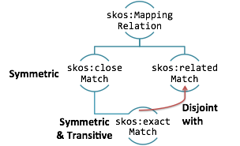

Besides making use of existing vocabularies, the author or maintainer of a dataset should investigate how entities in the dataset can be linked out to entities in other datasets. This follows Linked Data principle number 4 by linking to other URIs so that the user can discover more things. RDF links between entities in different datasets can be specified on two levels: the instance level and the schema level. On the instance level links can be made between individual entities (e.g. people, places, objects) using the properties rdfs:seeAlso and owl:sameAs. The property owl:sameAs is used to express that two URI references actually refer to the same thing. The property rdfs:seeAlso indicates that more relevant information can be found by following the link.
In MusicBrainz the property owl:sameAs is used to connect resources referring to the same music artist. The property rdfs:seeAlso is used to connect albums produced by artists. The reason rdfs:seeAlso is used instead of owl:sameAs is that a URI may refer to a particular release of an album (such as the US rather than UK release). It would be incorrect to express that an express an owl:sameAs relationship between them as they may differ in terms of release date and geographical market. They may also differ in other ways such as their track listings and album covers. An approach to modelling different album releases and their characteristics will be described in section 3.7.2.
On the schema level, which contains the vocabulary used to classify the instance-level items, a number of relationships can be expressed using RDFS, OWL and the SKOS Mapping vocabulary. The RDFS properties rdfs:subPropertyOf and rdfs:subClassOf can be used to declare relationships between two properties or two classes from different vocabularies.
As described in chapter 2, OWL also provides predicates for stating that two classes, or two properties, have the same meaning, as follows:
mo:MusicArtist owl:equivalentClass ex:musician .
foaf:made owl:equivalentProperty ex:creatorOf .
The first of these triples means that all instances of one of these classes are also instances of the other. The second of these triples means that if two resources are connected by one of the properties then they are also connected by the other property. SKOS mapping properties can also be used to express alignment between concepts from different vocabularies. These will be discussed later in the section.
The process of detecting links between datasets is known as link discovery. Datasets are heterogeneous in terms of their vocabularies, format and data representation. This makes the process of link discovery far more complex. Determining whether two entities from different datasets refer to the same thing is an example of what is know as the entity resolution problem. Two types of ambiguity can make the process more challenging. Name ambiguities can result from typos, or the use of different languages or homonyms to describe a thing. Structural ambiguities result from entities having possibly inconsistent relationships to other entities in their respective datasets. These are resolved using ontology and schema matching techniques.
Mappings between datasets (either on the instance or schema level) can be discovered and expressed both manually and automatically. The manual comparison of pairs of entities from different datasets is impractical for larger datasets. SILK is a tool that can be used to discover and express relationships between datasets. This is will be described in section 3.7.4.
SKOS (Simple Knowledge Organisation System) is a data model for expressing and linking Knowledge Organisation Systems such as thesauri, taxonomies, and classification schemes [12]. SKOS is expressed as RDF triples. Here will we consider three SKOS mapping properties in particular:
We will now give some examples that make use of the following prefixes.
@prefix mo: <http://purl.org/ontology/mo/>
@prefix dbpedia-ont: <http://dbpedia.org/ontology/>
@prefix schema: <http://schema.org/>
The example below expresses that the concept MusicArtist from the Music Ontology is an exact match for MusicalArtist from the DBpedia ontology.
mo:MusicArtist skos:exactMatch dbpedia-ont:MusicalArtist.
Here are some other examples:
mo:MusicGroup skos:exactMatch dbpedia-ont:Band.
mo:MusicGroup skos:exactMatch schema:MusicGroup.
The following triples express that the concept SignalGroup (meaning the group of musical or audio signals captured in a recording session) from the Music Ontology is a close match for both the MusicAlbum concept from schema.org and the Album concept from DBpedia.
mo:SignalGroup skos:closeMatch schema:MusicAlbum.
mo:SignalGroup skos:closeMatch dbpedia-ont:Album.
Certain integrity conditions apply in order to ensure a consistent mapping between two vocabularies. Two concepts cannot be both a related and exact match. The properties skos:closeMatch, skos:relatedMatch and skos:exactMatch are all symmetric. Only skos:exactMatch is transitive.

Figure 6: Partial Mapping Relation diagram with integrity conditions.